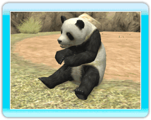

●グレビーシマウマ サバンナや半砂漠地帯に生息する動物。起きている時の殆どの時間を食事に費やす。 草食性。 ●カバ アフリカの赤道付近に生息する、主に水中で生活する動物。 水中では約５分ほど潜水することが出来る。草食性。  ●ジャイアントパンダ 竹林に生息する動物。 笹を一日中食べている。草食性。 ●アフリカゾウ サバンナや森林に生息する動物。皮膚が猛暑等により乾燥しやすく、よく水浴びを行う。草食性。 ●ミツオビアルマジロ 森林やサバンナに生息する動物。体長が２０ｃｍ程しかない小さな体で外敵から身を守る為にボール状になることが出来る。雑食性。 ●アメリカクロクマ 主に森林に生息する動物。木登りが上手。雑食性。 ●マレーバク 水辺の森林や湿地で生息する動物。基本的に単独もしくはペアで行動をする。草食性。